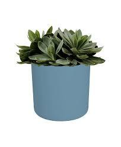
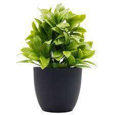
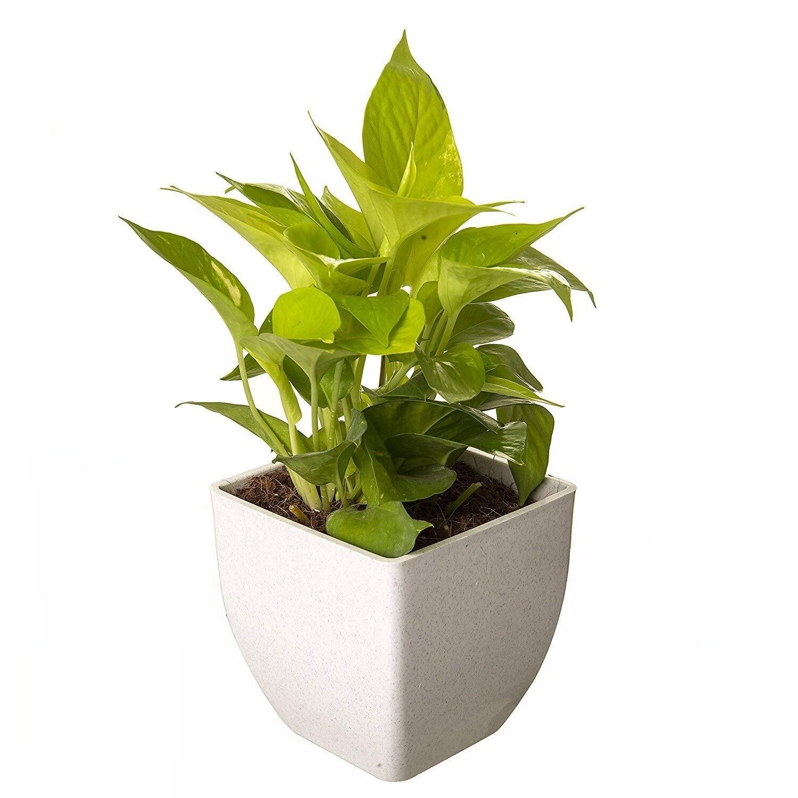
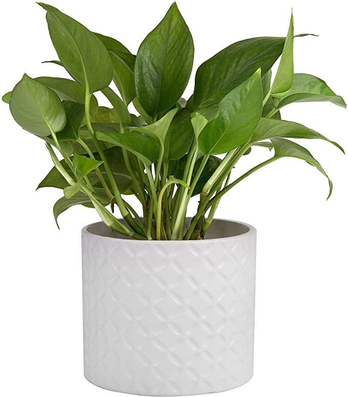
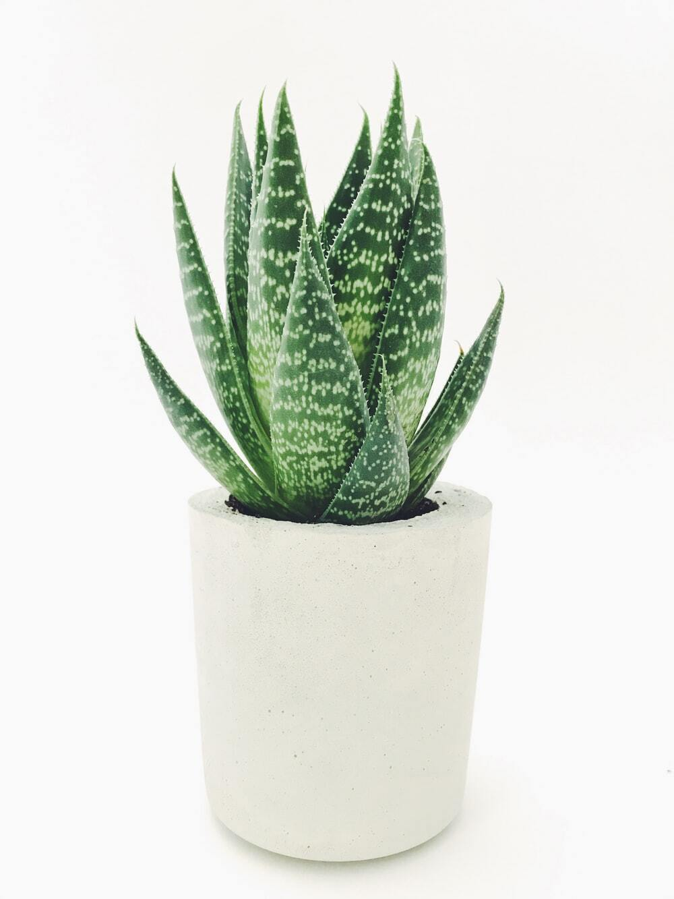

Plants are mainly multicellular organisms, predominantly photosynthetic eukaryotes of the kingdom Plantae. Historically, plants were treated as one of two kingdoms including all living things that were not animals, and all algae and fungi were treated as plants. However, all current definitions of Plantae exclude the fungi and some algae, as well as the prokaryotes (the archaea and bacteria). By one definition, plants form
PLANT2
Rs. 500
Plants are mainly multicellular organisms, predominantly photosynthetic eukaryotes of the kingdom Plantae. Historically, plants were treated as one of two kingdoms including all living things that were not animals, and all algae and fungi were treated as plants. However, all current definitions of Plantae exclude the fungi and some algae, as well as the prokaryotes (the archaea and bacteria). By one definition, plants form

PLANT3
Rs. 789
Plants are mainly multicellular organisms, predominantly photosynthetic eukaryotes of the kingdom Plantae. Historically, plants were treated as one of two kingdoms including all living things that were not animals, and all algae and fungi were treated as plants. However, all current definitions of Plantae exclude the fungi and some algae, as well as the prokaryotes (the archaea and bacteria). By one definition, plants form

PLANT4
Rs. 345
Plants are mainly multicellular organisms, predominantly photosynthetic eukaryotes of the kingdom Plantae. Historically, plants were treated as one of two kingdoms including all living things that were not animals, and all algae and fungi were treated as plants. However, all current definitions of Plantae exclude the fungi and some algae, as well as the prokaryotes (the archaea and bacteria). By one definition, plants form

PLANT5
Rs. 689
Plants are mainly multicellular organisms, predominantly photosynthetic eukaryotes of the kingdom Plantae. Historically, plants were treated as one of two kingdoms including all living things that were not animals, and all algae and fungi were treated as plants. However, all current definitions of Plantae exclude the fungi and some algae, as well as the prokaryotes (the archaea and bacteria). By one definition, plants form

PLANT6
Rs. 456
Plants are mainly multicellular organisms, predominantly photosynthetic eukaryotes of the kingdom Plantae. Historically, plants were treated as one of two kingdoms including all living things that were not animals, and all algae and fungi were treated as plants. However, all current definitions of Plantae exclude the fungi and some algae, as well as the prokaryotes (the archaea and bacteria). By one definition, plants form
PLANT7
Rs. 345
Plants are mainly multicellular organisms, predominantly photosynthetic eukaryotes of the kingdom Plantae. Historically, plants were treated as one of two kingdoms including all living things that were not animals, and all algae and fungi were treated as plants. However, all current definitions of Plantae exclude the fungi and some algae, as well as the prokaryotes (the archaea and bacteria). By one definition, plants form

PLANT8
Rs. 567
Plants are mainly multicellular organisms, predominantly photosynthetic eukaryotes of the kingdom Plantae. Historically, plants were treated as one of two kingdoms including all living things that were not animals, and all algae and fungi were treated as plants. However, all current definitions of Plantae exclude the fungi and some algae, as well as the prokaryotes (the archaea and bacteria). By one definition, plants form